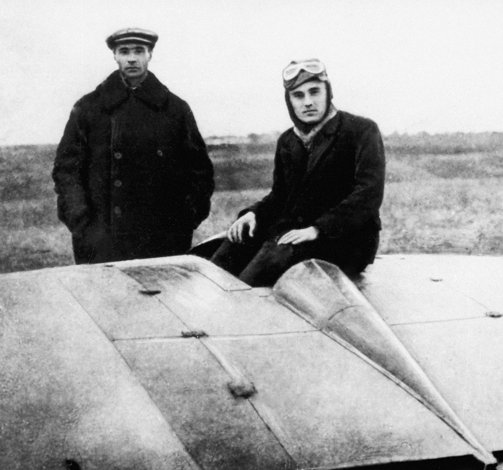

Sergei Korolev: The Architect of the Soviet Space Program
Early life and Education
Sergei Pavlovich Korolev was born on January 12, 1907, in Zhytomyr, Ukraine, then part of the Russian Empire. From a young age, Korolev was fascinated with the mechanics of flight, a passion that was ignited by the burgeoning field of aviation. This interest led him to pursue his education in aeronautical engineering at the Kiev Polytechnic Institute and later at the Moscow Higher Technical School (MHTS), where he was profoundly influenced by Nikolai Zhukovsky, the father of Russian aerodynamics. Despite the tumultuous times marked by the Russian Revolution and civil unrest, Korolev remained focused on his studies and early research. His early work included designing a glider and participating in advanced study groups that laid the groundwork for his future contributions to rocketry and space exploration.
Read more on NASA's Biography of Korolev
Contributions to the Space Race
Korolev's contributions to the Space Race were monumental and began in the late 1940s and early 1950s when he led the Soviet Union's rocket development program. Under his guidance, the Soviet space program achieved several world firsts, which included launching the first artificial Earth satellite, Sputnik 1, in 1957. This event not only marked the beginning of space exploration but also symbolized the technological prowess of the Soviet Union at the height of the Cold War. Following this, Korolev's vision and leadership led to the historic launch of Vostok 1 in 1961, which made Yuri Gagarin the first human to orbit Earth. These achievements under Korolev's direction not only accelerated the Space Race but also set the stage for all future human spaceflight endeavors.
Explore Korolev and the Space Race
Vision and Influence on Modern Space Exploration

Sergei Korolev's foresight fundamentally shaped space exploration, bridging past achievements with future possibilities. His work not only pioneered the technical aspects of space travel but also advocated for its scientific significance and the potential for peaceful international collaboration. The legacy of his designs, particularly the Soyuz spacecraft, continues to support and inspire current space missions. Korolev's impact goes beyond engineering; it has cultivated a legacy of innovation and exploration, encouraging ongoing advancements in space science. His vision serves as a cornerstone for modern space exploration, inspiring generations to explore the cosmos.
Learn more about Korolev's Legacy on Britannica
 Sergei Pavlovich Korolev was born on January 12, 1907, in Zhytomyr, Ukraine, then part of the Russian Empire. From a young age, Korolev was fascinated with the mechanics of flight, a passion that was ignited by the burgeoning field of aviation. This interest led him to pursue his education in aeronautical engineering at the Kiev Polytechnic Institute and later at the Moscow Higher Technical School (MHTS), where he was profoundly influenced by Nikolai Zhukovsky, the father of Russian aerodynamics. Despite the tumultuous times marked by the Russian Revolution and civil unrest, Korolev remained focused on his studies and early research. His early work included designing a glider and participating in advanced study groups that laid the groundwork for his future contributions to rocketry and space exploration.
Sergei Pavlovich Korolev was born on January 12, 1907, in Zhytomyr, Ukraine, then part of the Russian Empire. From a young age, Korolev was fascinated with the mechanics of flight, a passion that was ignited by the burgeoning field of aviation. This interest led him to pursue his education in aeronautical engineering at the Kiev Polytechnic Institute and later at the Moscow Higher Technical School (MHTS), where he was profoundly influenced by Nikolai Zhukovsky, the father of Russian aerodynamics. Despite the tumultuous times marked by the Russian Revolution and civil unrest, Korolev remained focused on his studies and early research. His early work included designing a glider and participating in advanced study groups that laid the groundwork for his future contributions to rocketry and space exploration.